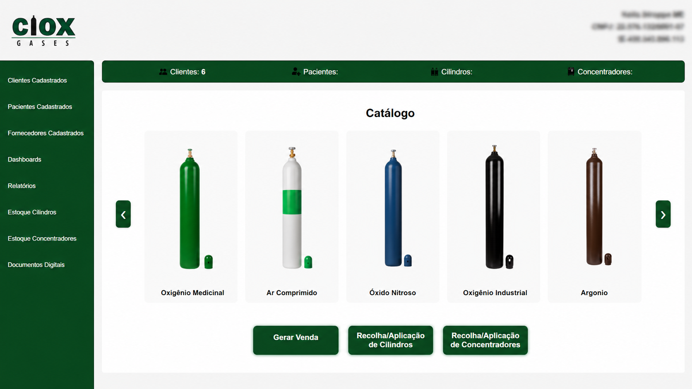
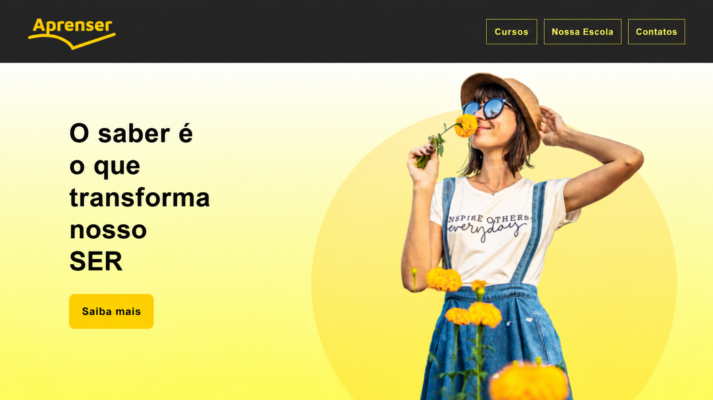
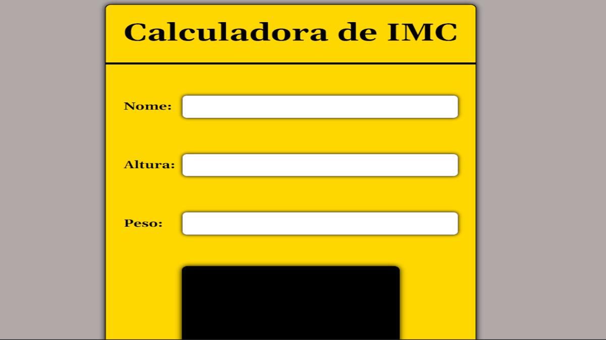

Sobre Mim
Olá! Me chamo Leonardo da Silva Melo, tenho 23 anos e sou estudante de Matemática pela Universidade Estadual de Londrina. Iniciei minha jornada acadêmica em 2022 e, durante a faculdade, acabei descobrindo algo que me chamou ainda mais atenção do que a própria matemática: a programação.
Comecei meus estudos com Python, por ser uma linguagem muito utilizada no meio acadêmico e também uma excelente porta de entrada para quem está começando. Durante esse processo, tive como base as aulas do professor Gustavo Guanabara, através do canal no YouTube Curso em Vídeo.
Após estudar um pouco sobre Python, comecei a me interessar pelo desenvolvimento de aplicações mais completas. Minha ideia era criar um sistema de cadastro de clientes, mas percebi que construir interfaces com Python não seria o caminho ideal. Foi então que conheci o HTML, CSS e JavaScript — e isso mudou completamente minha forma de enxergar a programação. Descobri o quanto gosto de criar interfaces, pensar na experiência do usuário e transformar ideias em aplicações reais e interativas.
Hoje, meu foco principal está no Front-End, onde venho desenvolvendo minhas habilidades na construção de interfaces e experiências para o usuário. Ainda assim, nunca deixei de estudar o Back-End, pois busco evoluir como desenvolvedor FullStack e ter uma visão completa do desenvolvimento de aplicações.
Tech Stack
Frontend
- HTML
- CSS
- JavaScript
- Tailwind
Backend
- Node.JS
- Python
Tools
- GIT GitHub
Projetos
Destaques

Sistema Ciox
Muito animado em compartilhar meu principal projeto: o sistema da Ciox Gases — o primeiro sistema que desenvolvi e vendi para um cliente real! 🎉
O sistema da Ciox é um sistema web fullstack completo desenvolvido para uma empresa de venda e locação de cilindros, com foco em organização, praticidade e escalabilidade.
Principais funcionalidades:
- Cadastro completo de clientes, pacientes e fornecedores
- Catálogo de cilindros
- Busca e filtros de registros
- Atualização da quantidade de clientes e pacientes em tempo real
- Exclusão, edição de clientes, fornecedores e pacientes
- Relatórios de vendas (em desenvovimento)
- Dashboards com informações dos clientes (em desenvolvimento)
Tecnologias usadas:
- HTML, CSS e JavaScript no frontend
- Node.js e Express no backend
- SQLite como banco de dados
- Deploy na Railway
Todos os Projetos
Moda Ora
Este projeto faz parte da minha jornada de aprendizado no curso de HTML e CSS do professor Daniel Tapias Morales na Udemy. O ModaOra é um blog de moda moderno, explorando responsividade, animações e organização de layout de forma elegante.

Aprenser
Este projeto faz parte da minha jornada de aprendizado no curso de HTML e CSS do professor Daniel Tapias Morales na Udemy. O Aprenser é a página de uma escola online voltada para cursos de programação, onde pratiquei Flexbox, media queries, fontes, animações com hover, box-shadow, border-radius e transitions.

Como Surgiu o Bugdroid
Este projeto faz parte da minha jornada de aprendizado no curso de HTML e CSS do professor Gustavo Guanabara. O projeto conta a história de como surgiu o Bugdroid, o icônico mascote do Android, praticando estruturação de conteúdo com HTML e estilização com CSS.

Cordel Moderno
Este projeto faz parte da minha jornada de aprendizado no curso de HTML e CSS do professor Gustavo Guanabara. O Tecnologia do Agora é uma página dedicada a exibir o cordel homônimo de Milton Duarte, celebrando a rica tradição da literatura de cordel brasileira com uma apresentação web estilizada.

Calculadora IMC
Uma calculadora de IMC desenvolvida para dar os primeiros passos no JavaScript. O projeto tem um design simples e funcional, focado em praticar lógica, manipulação do DOM e interação com o usuário através de eventos.